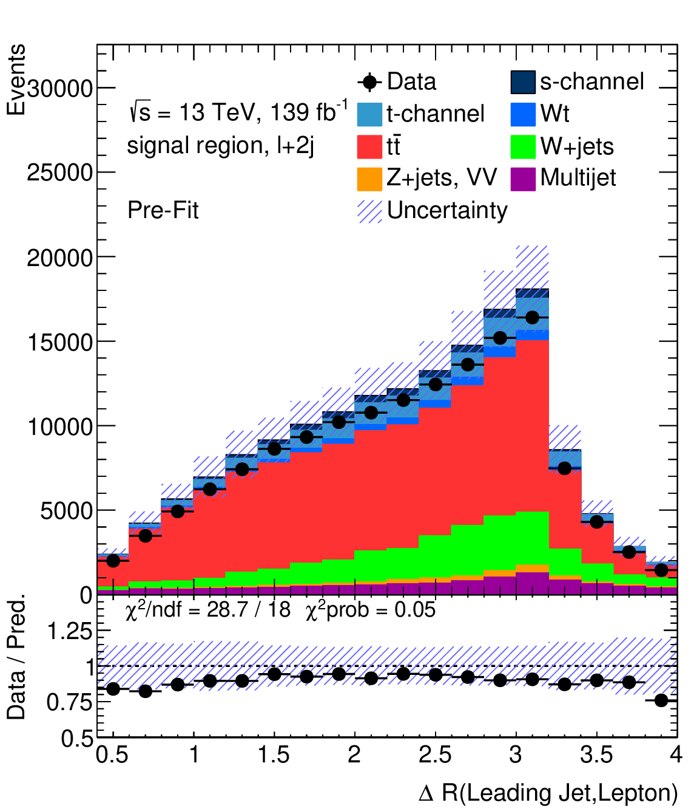
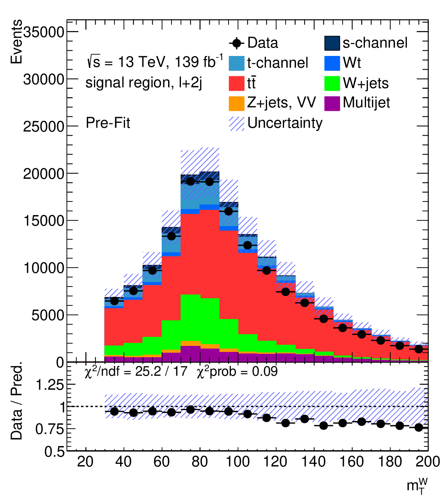

My PhD Project
Measurement of the s-channel single top production with the ATLAS detector
The analysis
The s-channel single top production has the smallest cross-section of the top production channels. That means in the vast amount of data from the ATLAS detector, only a tiny fraction (less than 5 %) is what we are looking for. In german you say: "die Nadel im Heuhaufen suchen" which literally translates to "searching for the needle in the haystack". The question of the analysis is: "Is there an s-channel single top contribution in the data?".
Introduction to the physics of the project
It starts with a bottle of hydrogen. The hydrogen consists of a proton and an electron. The electron is removed and the proton is accelerated to 6.5 TeV (99.9999991 % of the speed of light). Inside the ATLAS detector two accelerated protons collide and since their kinetic energy (energy from their speed) can be transformed into mass (that's the message of the famous equation E=mc2), several new particles are produced. The proton is not a fundamental particle. It consists of gluons and quarks. When they collide top quarks are dominantly produced in pairs. A single top quark is produced by the weak interaction which is (as the name suggests) weaker and therefore the process is less likely. Within the single top production processes, the s-channel is even more supressed. That's the reason why this by the Standard Model, the right now best description of fundamental particles, predicted process was not yet discovered (the threshold for a discovery is the 5 sigma confidence level) in proton on proton collisions.
Data Exploration
To start, we explored the vast amount of data from the ATLAS detector, comparing it to Monte Carlo simulations, which provide our theoretical predictions. Our dataset was validated by producing plots of kinematic variables, revealing the tiny signal contribution compared to the background.
 Multivariate Analysis
To separate the signal from the background, I employed a powerful multivariate analysis technique called the Matrix Element Method (MEM), which outperforms other methods like neural nets or boosted decision trees in this use-case. The plots below show the discriminating variable. In the left plot, the processes are normalized. The s-channel accumulates at high discriminant values and the background contributions tend towards low values. On the right side, you can see the final discriminant distribution. In the last bin, the signal still only amounts to approximately 10 %. Here only the theory prediction is shown. As the thesis is not published yet, I am not allowed to show you the actual data of the ATLAS detector.
Data Modelling
Next, I built a statistical model of the data and by maximizing the likelihood of the model, I extracted the parameter of interest. The parameter of interest is how much signal is in the data. The goal is to reach a 5 sigma confidence level. Although I can't reveal the analysis result yet, we're optimistic about our approach.
I continuously looked for ways to improve our analysis and I discovered that the 2j-vs-3j ratio method was an excellent option. As you can see in the ROC curve, by setting the tunable parameter to 0.65, the algorithm's performance can be improved.
Explanation of the ROC curve
The ROC curve is a measure to compare classifiers. A completely random guess which event is signal and which background would yield a diagonal line from (0,0) to (1,1). The closer the curve is to the top-left corner of the plot, the better the classifier's performance.
I was always looking for improvements of this analysis. Therefore, I also explored the idea of using a neural network with an intermediate MEM result as input to further improve the results. This study is shown on the next page